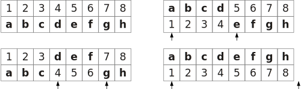
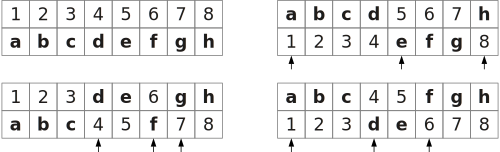

Module io.jenetics.base
Package io.jenetics
Class MultiPointCrossover<G extends Gene<?,G>,C extends Comparable<? super C>>
java.lang.Object
io.jenetics.AbstractAlterer<G,C>
io.jenetics.Recombinator<G,C>
io.jenetics.Crossover<G,C>
io.jenetics.MultiPointCrossover<G,C>
- All Implemented Interfaces:
Alterer<G,C>
- Direct Known Subclasses:
SinglePointCrossover
public class MultiPointCrossover<G extends Gene<?,G>,C extends Comparable<? super C>>
extends Crossover<G,C>
Multiple point crossover
If theMultiPointCrossover is created with one crossover point, it
behaves exactly like the SinglePointCrossover. The following picture
shows how the MultiPointCrossover works with two crossover points,
defined at index 1 and 4.

If the number of crossover points is odd, the crossover looks like in the following figure.
- Since:
- 1.2
- Version:
- 6.0
- See Also:
-
Field Summary
Fields inherited from class io.jenetics.AbstractAlterer
_probabilityFields inherited from interface io.jenetics.Alterer
DEFAULT_ALTER_PROBABILITY -
Constructor Summary
ConstructorsConstructorDescriptionCreate a new crossover instance with two crossover points and crossover probability 0.05.MultiPointCrossover(double probability) Create a new crossover instance with two crossover points.MultiPointCrossover(double probability, int n) Create a new crossover instance.MultiPointCrossover(int n) Create a new crossover instance with default crossover probability of 0.05. -
Method Summary
Methods inherited from class io.jenetics.Recombinator
alter, orderMethods inherited from class io.jenetics.AbstractAlterer
probability
-
Constructor Details
-
MultiPointCrossover
Create a new crossover instance.- Parameters:
probability- the recombination probability.n- the number of crossover points.- Throws:
IllegalArgumentException- if theprobabilityis not in the valid range of[0, 1]orn < 1.
-
MultiPointCrossover
Create a new crossover instance with two crossover points.- Parameters:
probability- the recombination probability.- Throws:
IllegalArgumentException- if theprobabilityis not in the valid range of[0, 1].
-
MultiPointCrossover
Create a new crossover instance with default crossover probability of 0.05.- Parameters:
n- the number of crossover points.- Throws:
IllegalArgumentException- ifn < 1.
-
MultiPointCrossover
public MultiPointCrossover()Create a new crossover instance with two crossover points and crossover probability 0.05.
-
-
Method Details
-
crossoverPointCount
Return the number of crossover points.- Returns:
- the number of crossover points.
-
crossover
Description copied from class:CrossoverTemplate method which performs the crossover. The arguments given are mutable non-null arrays of the same length. -
toString
-